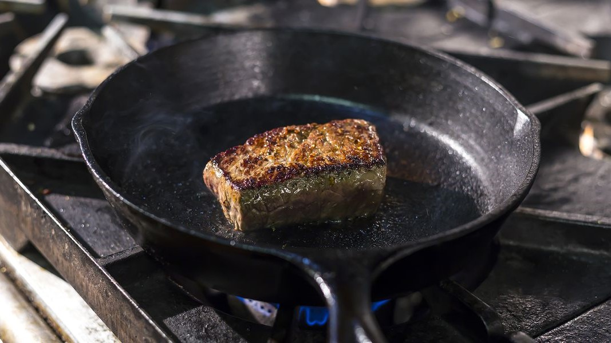

Hi! I'm glad you've taken the opportunity to have a quick look over my portfolio, however sparse or incomplete it may be at the present.
I'm a first generation graduate from the University of Florida, completing my B.S. in Statistics, with minors in both Mathematics and Japanese.
I have experiencing in programming largely through my coursework and projects I've completed.
With it being the favorite language of the Statistics Department, I've had plenty of experience in R, but my knowledge does not end there.
I've also worked in TensorFlow, Microsoft Office products, Tableau, and SQL to improve my data manipulation and diversify my skillset.
I'm open to work as a Data Analyst/Engineer at any level, so feel free to reach out!
Portfolio
Walkability and Happiness
In this mini-project, I decided to do a quick statistical analysis investigating whether a city's "walkability" is related to its "happiness". Used BeautifulSoup for data scraping, and statsmodels for general statistical analysis.
Formula One Predictions
A team of us attempted to predict F1 qualifying times from the 2022 season using informations gathered from the practice sessions. Neural network model constructed using TensorFlow, data scraped using fastf1.

Statistical Computing in R
Code includes rejection sampling, Monte Carlo estimation, gradient descent, and Metropolis-Hastings Random Walk Sampling
Categorical Data Analysis
In this class I built we learned various methods of categorical data analysis, building logistic regression models, clogit models, GLMMS, finding AIC, BIC, and ROC.

Design of Experiments
In this class we took an in-depth look at multiple regression models and cross-interaction. Final paper includes an addendum, which was a brief research of the difference between one-way and two-way ANOVA testing
Get In Touch
Feel free to reach out about any inquiries or opportunities!